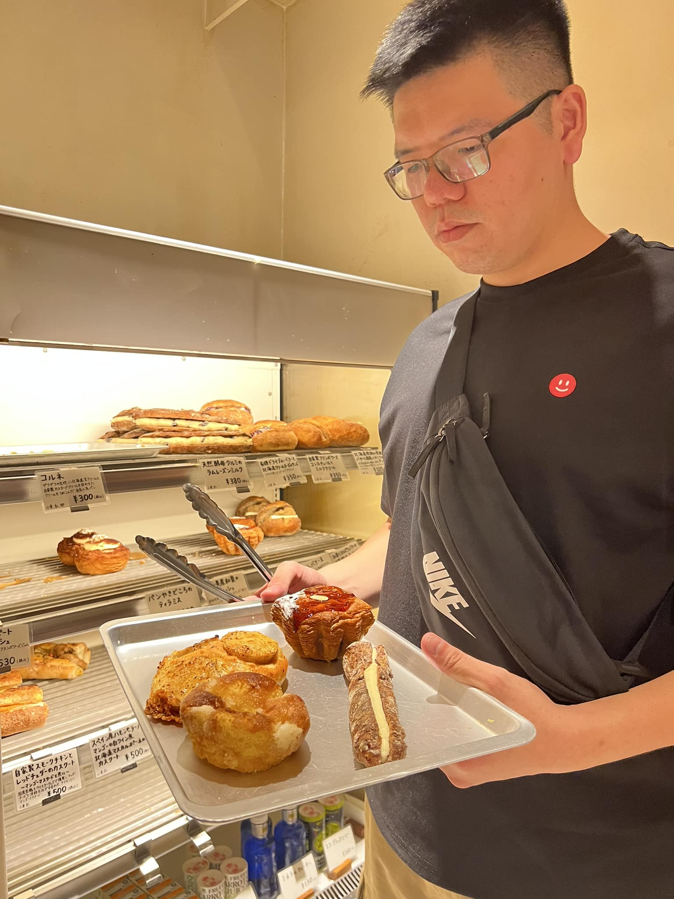

湯暮麵包的故事
「湯暮麵包」最早稱為「湯種本舖」。「湯」代表湯種法製作的吐司，這種方法雖花費時間較長，但能增添麵包的保濕性及口感。
「暮」則象徵黃昏，我們的販售時間從下午四點開始，讓顧客在忙碌一天後享受新鮮出爐的麵包。
這就是湯暮麵包的由來：堅持品質與熱情，帶給您美味的享受。

他從一張餐桌、一條桌巾起步，經歷了艷陽與風雨的考驗。隨著事業逐漸步上軌道，湯暮老闆創立了「湯暮麵包」，並於2020年底轉型為「麵包車」，將美味的麵包帶到更多地方。
湯暮老闆的故事展示了他的熱情與堅持，他用心製作每一份麵包，帶給顧客健康美味的選擇。
湯暮創辦人
湯暮老闆是丹妮莎麵包花園的第二代接班人。他在大學畢業後，前往台中一間日系麵包店學習。每當休假時，他都會回到家裡的麵包店，自製麵包並在草屯環電路旁擺攤開始創業。他從一張餐桌、一條桌巾起步，經歷了艷陽與風雨的考驗。隨著事業逐漸步上軌道，湯暮老闆創立了「湯暮麵包」，並於2020年底轉型為「麵包車」，將美味的麵包帶到更多地方。
湯暮老闆的故事展示了他的熱情與堅持，他用心製作每一份麵包，帶給顧客健康美味的選擇。